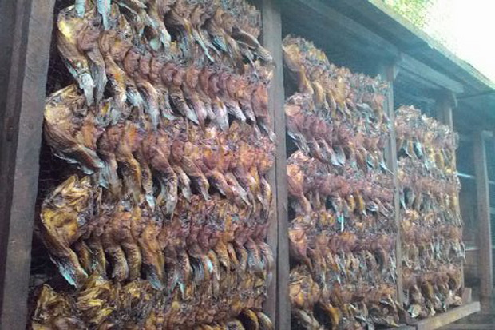
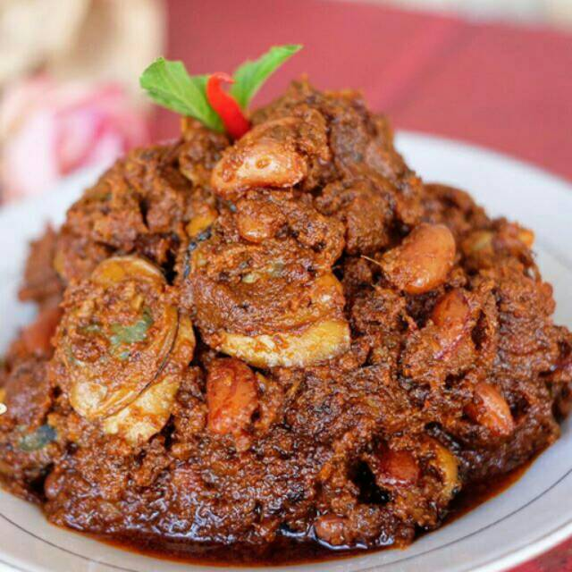
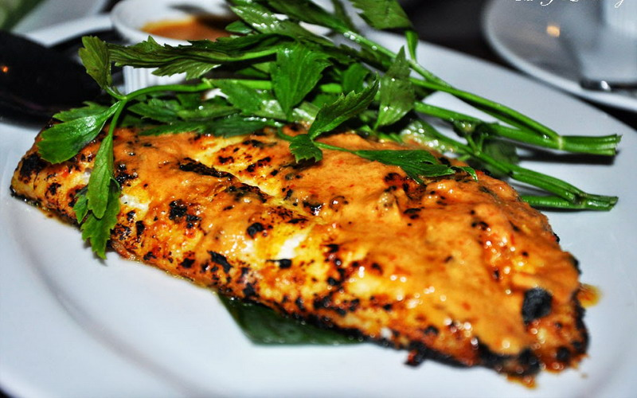
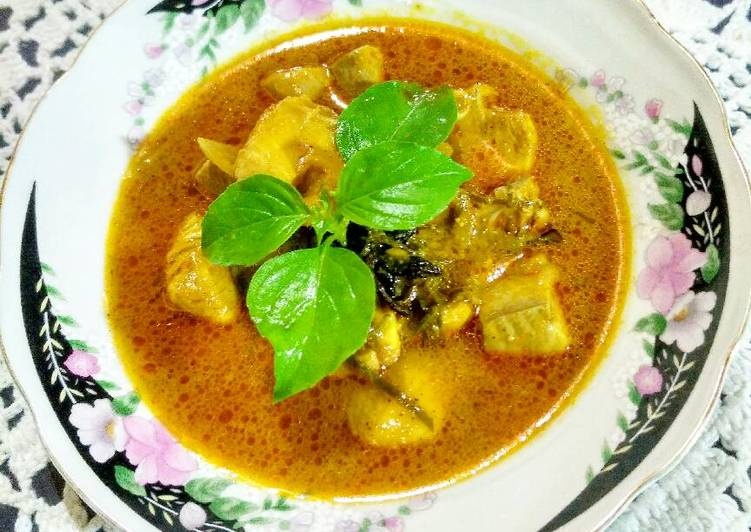
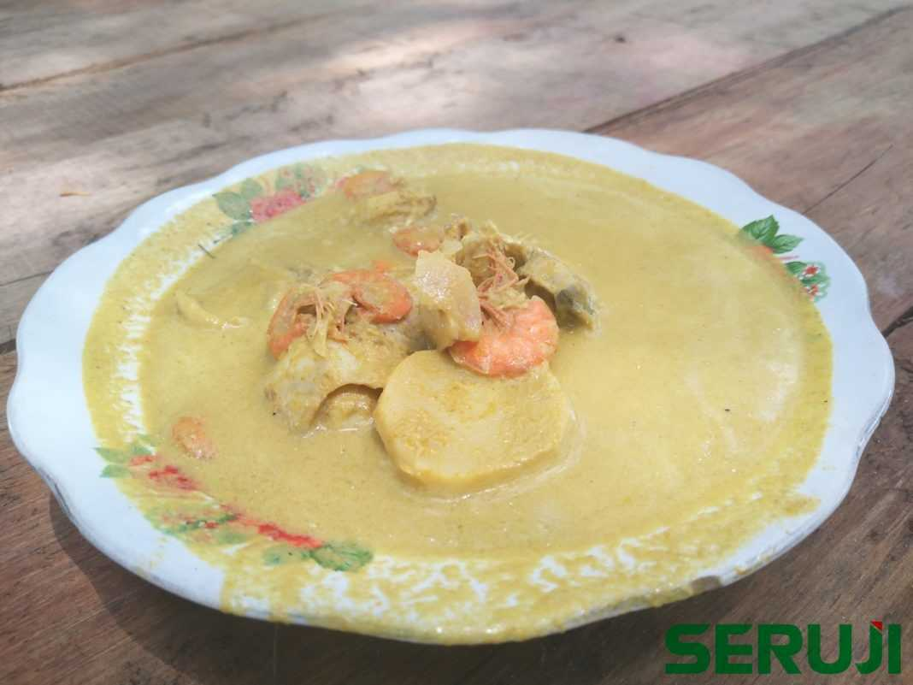
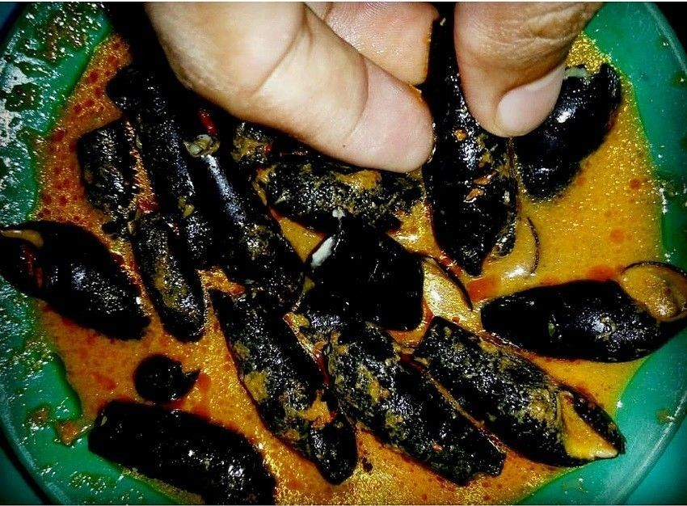

Makanan-Makanan Khas Pasaman Barat :
1. Lele Asap
 Makanan Khas Simpang Ampek Pasaman Barat yang cukup populer dibawa sebagai oleh – oleh bernama Lele Asap. Kuliner khas ini dibuat para masyarakat Pasaman Barat dengan cara tradisional. Lele Asap dibuat dari ikan lele air tawar yang biasanya hidup di rawa dan dibudidayakan. Lele tersebut kemudian melalui proses pengasapan yang biasanya berlangsung selama 2 hari. Setelah diasapkan, lele kemudian di oven. Tahap terakhir adalah pengemasan yang bersih dan menarik. Lele Asap ini bisa diolah menjadi berbagai hidangan seperti gulai asam durian maupun gulai lele. Lele asap biasa dijual per kilo dengan kisaran harga Rp 95.000,- – Rp 100.000,-.2. Rendang Lokan
 Rendang Lokan merupakan rendang yang terbuat dari lokan. Lokan sendiri artinya adalah kerang, jadi rendang lokan adalah rendang yang terbuat dari isian kerang. Rendang lokan adalah rendangnya orang pesisir di daerah Pasaman Barat.Makanan ini merupakan hasil produk pesisir Pasaman yang umumnya banyak menangkap kerang. Kerang yang digunakan untuk membuat rendang lokan adalah kerang berukuran cukup besar. Biasanya lokan akan dimasak bersamaan dengan daun pakis atau daun singkong.
Tujuannya adalah menambah cita rasa. Rendang lokan memang masih jarang diketahui mengingat, hidangan rendang identik menggunakan daging sapi atau daging kerbau.
Tetapi jika Anda tertarik mencobanya? Rendang lokan saat ini bisa ditemui di toko – toko online dengan kisaran harga sekitar Rp 100.000,- – Rp 115.000,-.
3. Panggang Pacak
 Panggang Pacak merupakan sebuah makanan khas Simpang Ampek, Pasaman Barat. Makanan ini berbahan dasar ikan yang dibumbui dan diolah dengan cara dipacak. Pacak berasal dari bahasa Tapanuli Tengah yang berarti menepuk – nepuk ikan.Kunci rasa dari masakan ini dari bumbu dan cara memasak. Racikan bumbu yang digunakan untuk membuat Panggang Pacak adalah cabai, kunyit, serai, garam, asam, bawang, jeruk nipis dan kelapa yang sudah diparut.
Setelah itu, ikan yang telah dibumbui kemudian dipanggang di atas bara api. Per porsi Panggang Pacak, bisa Anda dapatkan hanya dengan harga Rp 15.000,- rupiah saja, loh!
4. Gulai Hiu
 Mungkinkah ada makanan berbahan dasar hiu? Tentu saja ada… makanan ini bernama Gulai Hiu yang merupakan makanan khas Simpang Ampek Pasaman Barat. Namun, hiu yang dibuat gulai adalah ikan hiu berukuran kecil, ya.Sama seperti cara membuat gulai lainnya, ikan hiu yang telah dibersihkan dan dipotong kemudian dimasukkan ke dalam santan yang telah diberikan bumbu – bumbu halus. Masakan ini biasa dijual dengan harga Rp 10.000,- saja per porsi.
5. Gulai Sabo
 Sangat berbeda dengan gulai hiu, gulai sabo merupakan makanan khas Simpang Ampek yang di dalamnya berisi berbagai macam hasil laut seperti udang, ikan, kepiting yang dimasak dengan kuah santan kental dengan rasa yang pedas khas Minang.Gulai Sabo sangat nikmat jika disantap dengan sepiring nasi hangat. Namun, bagi Anda yang memiliki riwayat kolesterol tinggi, harap berhati – hati mengkonsumsi makanan ini dan jangan berlebihan. Seporsi gulai sabo dijual dengan harga Rp 15.000,- lengkap dengan seporsi nasi hangat.
6. Gulai Langkitang Lado Kutu
 Makanan ini merupakan gulai siput yang rasanya gurih pedas yang dimasak bersama dengan santan dan bumbu rempah khas Minang. Kini gulai langkitang sudah mulai langka di daerah Simpang Ampek. Makanan ini berbahan dasar siput sawah yang biasanya berbentuk memanjang dan berwarna hitam.Langkitang kemudian dipotong bagian ujung cangkangnya untuk dikeluarkan kotorannya, setelah itu dicuci bersih dan dimasak menggunakan santan dan bumbu – bumbu.
Cara makan hidangan khas ini adalah dengan cara menyeruput bagian bawah cangkang Langkitang hingga seluruh dagingnya keluar bersama kuah santannya. Hmm…. Sudah terbayang, kan rasanya?
Demikian pembahasan tentang 6 kuliner dan makanan khas Pasaman Barat yang kaya akan bumbu rempahnya yang khas. Mana makanan di atas yang akan Anda coba?